#minecraft:sulfur_cube_archetype/slow_bouncy
物品标签 · 150 个已收录成员
标签成员 (150)
 紫水晶块
紫水晶块minecraft:amethyst_block
 安山岩
安山岩minecraft:andesite
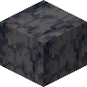
玄武岩minecraft:basalt
 黑石
黑石minecraft:blackstone
 红砖块
红砖块minecraft:bricks
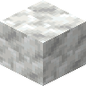
方解石minecraft:calcite
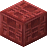
雕纹朱砂minecraft:chiseled_cinnabar
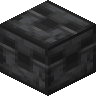
雕纹深板岩minecraft:chiseled_deepslate
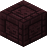
雕纹下界砖块minecraft:chiseled_nether_bricks
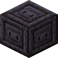
雕纹磨制黑石minecraft:chiseled_polished_blackstone
 雕纹石英块
雕纹石英块minecraft:chiseled_quartz_block
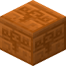
雕纹红砂岩minecraft:chiseled_red_sandstone
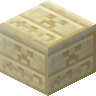
雕纹砂岩minecraft:chiseled_sandstone
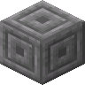
雕纹石砖minecraft:chiseled_stone_bricks
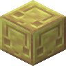
雕纹硫黄minecraft:chiseled_sulfur
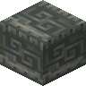
雕纹凝灰岩minecraft:chiseled_tuff
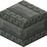
雕纹凝灰岩砖minecraft:chiseled_tuff_bricks
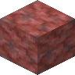
朱砂minecraft:cinnabar
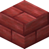
朱砂砖minecraft:cinnabar_bricks
 深板岩圆石
深板岩圆石minecraft:cobbled_deepslate
 圆石
圆石minecraft:cobblestone
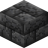
裂纹深板岩砖minecraft:cracked_deepslate_bricks
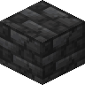
裂纹深板岩瓦minecraft:cracked_deepslate_tiles
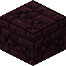
裂纹下界砖块minecraft:cracked_nether_bricks
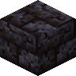
裂纹磨制黑石砖minecraft:cracked_polished_blackstone_bricks
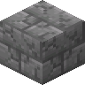
裂纹石砖minecraft:cracked_stone_bricks
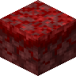
绯红菌岩minecraft:crimson_nylium
 哭泣的黑曜石
哭泣的黑曜石minecraft:crying_obsidian
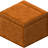
切制红砂岩minecraft:cut_red_sandstone
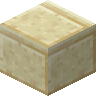
切制砂岩minecraft:cut_sandstone
 暗海晶石
暗海晶石minecraft:dark_prismarine
 深板岩
深板岩minecraft:deepslate
 深板岩砖
深板岩砖minecraft:deepslate_bricks
 深板岩瓦
深板岩瓦minecraft:deepslate_tiles
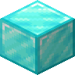
钻石块minecraft:diamond_block
 闪长岩
闪长岩minecraft:diorite
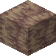
滴水石块minecraft:dripstone_block
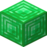
绿宝石块minecraft:emerald_block
 末地石
末地石minecraft:end_stone
 末地石砖
末地石砖minecraft:end_stone_bricks
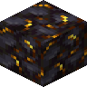
镶金黑石minecraft:gilded_blackstone
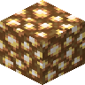
荧石minecraft:glowstone
 花岗岩
花岗岩minecraft:granite
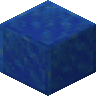
青金石块minecraft:lapis_block
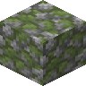
苔石minecraft:mossy_cobblestone
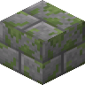
苔石砖minecraft:mossy_stone_bricks
 泥砖
泥砖minecraft:mud_bricks
 下界砖块
下界砖块minecraft:nether_bricks
 下界岩
下界岩minecraft:netherrack
 侦测器
侦测器minecraft:observer
 黑曜石
黑曜石minecraft:obsidian
 磨制安山岩
磨制安山岩minecraft:polished_andesite
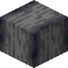
磨制玄武岩minecraft:polished_basalt
 磨制黑石
磨制黑石minecraft:polished_blackstone
 磨制黑石砖
磨制黑石砖minecraft:polished_blackstone_bricks
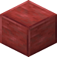
磨制朱砂minecraft:polished_cinnabar
 磨制深板岩
磨制深板岩minecraft:polished_deepslate
 磨制闪长岩
磨制闪长岩minecraft:polished_diorite
 磨制花岗岩
磨制花岗岩minecraft:polished_granite
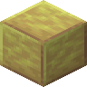
磨制硫黄minecraft:polished_sulfur
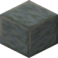
磨制凝灰岩minecraft:polished_tuff
 海晶石
海晶石minecraft:prismarine
 海晶石砖
海晶石砖minecraft:prismarine_bricks
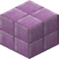
紫珀块minecraft:purpur_block
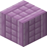
紫珀柱minecraft:purpur_pillar
 石英块
石英块minecraft:quartz_block
 石英砖
石英砖minecraft:quartz_bricks
 下界石英矿石
下界石英矿石minecraft:nether_quartz_ore
 石英柱
石英柱minecraft:quartz_pillar
 红色下界砖块
红色下界砖块minecraft:red_nether_bricks
 红砂岩
红砂岩minecraft:red_sandstone
 红石灯
红石灯minecraft:redstone_lamp
 砂岩
砂岩minecraft:sandstone
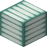
海晶灯minecraft:sea_lantern
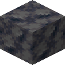
平滑玄武岩minecraft:smooth_basalt
 平滑石英块
平滑石英块minecraft:smooth_quartz
 平滑红砂岩
平滑红砂岩minecraft:smooth_red_sandstone
 平滑砂岩
平滑砂岩minecraft:smooth_sandstone
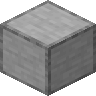
平滑石头minecraft:smooth_stone
 石头
石头minecraft:stone
 石砖
石砖minecraft:stone_bricks
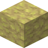
硫黄minecraft:sulfur
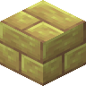
硫黄砖minecraft:sulfur_bricks
 凝灰岩
凝灰岩minecraft:tuff
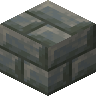
凝灰岩砖minecraft:tuff_bricks
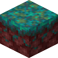
诡异菌岩minecraft:warped_nylium
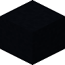
黑色混凝土minecraft:black_concrete
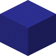
蓝色混凝土minecraft:blue_concrete
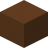
棕色混凝土minecraft:brown_concrete
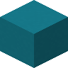
青色混凝土minecraft:cyan_concrete灰色混凝土
minecraft:gray_concrete
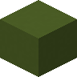
绿色混凝土minecraft:green_concrete
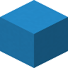
淡蓝色混凝土minecraft:light_blue_concrete
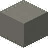
淡灰色混凝土minecraft:light_gray_concrete黄绿色混凝土
minecraft:lime_concrete品红色混凝土
minecraft:magenta_concrete橙色混凝土
minecraft:orange_concrete粉红色混凝土
minecraft:pink_concrete紫色混凝土
minecraft:purple_concrete红色混凝土
minecraft:red_concrete黄色混凝土
minecraft:yellow_concrete白色混凝土
minecraft:white_concrete
 黑硅岩煤矿石
黑硅岩煤矿石natures_spirit:chert_coal_ore煤矿石
minecraft:coal_ore深层煤矿石
minecraft:deepslate_coal_ore
 黑硅岩青金石矿石
黑硅岩青金石矿石natures_spirit:chert_lapis_ore青金石矿石
minecraft:lapis_ore深层青金石矿石
minecraft:deepslate_lapis_ore
 黑硅岩红石矿石
黑硅岩红石矿石natures_spirit:chert_redstone_ore红石矿石
minecraft:redstone_ore深层红石矿石
minecraft:deepslate_redstone_ore
 黑硅岩钻石矿石
黑硅岩钻石矿石natures_spirit:chert_diamond_ore钻石矿石
minecraft:diamond_ore深层钻石矿石
minecraft:deepslate_diamond_ore
 黑硅岩绿宝石矿石
黑硅岩绿宝石矿石natures_spirit:chert_emerald_ore绿宝石矿石
minecraft:emerald_ore深层绿宝石矿石
minecraft:deepslate_emerald_ore
 陶瓦
陶瓦minecraft:terracotta白色陶瓦
minecraft:white_terracotta橙色陶瓦
minecraft:orange_terracotta品红色陶瓦
minecraft:magenta_terracotta淡蓝色陶瓦
minecraft:light_blue_terracotta黄色陶瓦
minecraft:yellow_terracotta黄绿色陶瓦
minecraft:lime_terracotta粉红色陶瓦
minecraft:pink_terracotta灰色陶瓦
minecraft:gray_terracotta淡灰色陶瓦
minecraft:light_gray_terracotta青色陶瓦
minecraft:cyan_terracotta
 紫色陶瓦
紫色陶瓦minecraft:purple_terracotta蓝色陶瓦
minecraft:blue_terracotta棕色陶瓦
minecraft:brown_terracotta
 绿色陶瓦
绿色陶瓦minecraft:green_terracotta
 红色陶瓦
红色陶瓦minecraft:red_terracotta黑色陶瓦
minecraft:black_terracotta黑色带釉陶瓦
minecraft:black_glazed_terracotta蓝色带釉陶瓦
minecraft:blue_glazed_terracotta棕色带釉陶瓦
minecraft:brown_glazed_terracotta青色带釉陶瓦
minecraft:cyan_glazed_terracotta灰色带釉陶瓦
minecraft:gray_glazed_terracotta绿色带釉陶瓦
minecraft:green_glazed_terracotta淡蓝色带釉陶瓦
minecraft:light_blue_glazed_terracotta淡灰色带釉陶瓦
minecraft:light_gray_glazed_terracotta黄绿色带釉陶瓦
minecraft:lime_glazed_terracotta品红色带釉陶瓦
minecraft:magenta_glazed_terracotta橙色带釉陶瓦
minecraft:orange_glazed_terracotta粉红色带釉陶瓦
minecraft:pink_glazed_terracotta紫色带釉陶瓦
minecraft:purple_glazed_terracotta红色带釉陶瓦
minecraft:red_glazed_terracotta黄色带釉陶瓦
minecraft:yellow_glazed_terracotta白色带釉陶瓦
minecraft:white_glazed_terracotta
使用该标签的配方
无